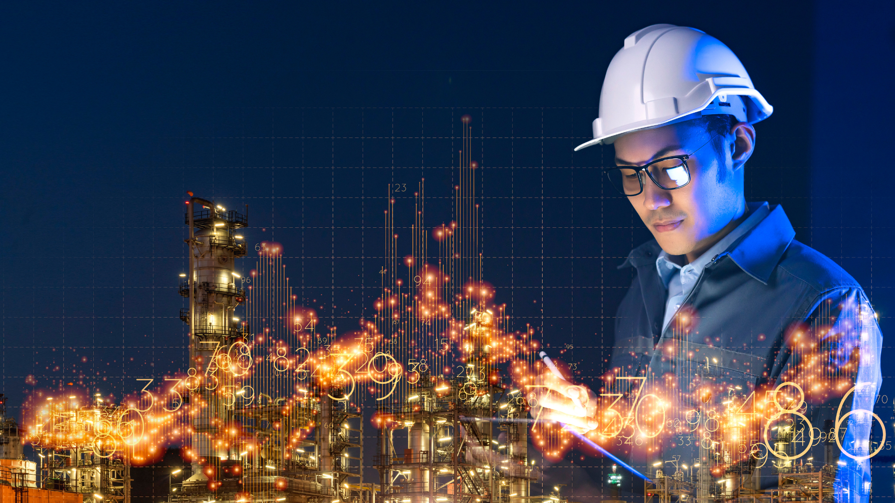

Layanan GEMA

Membantu perusahaan dan negara memberikan dampak positif terhadap lingkungan.
Mitra pilihan anda dalam perjalanan menuju masa depan yang lebih bersih.
Keunggulan dalam minimalisasi limbah dan kepatuhan, dari bahan limbah hingga potensi bersihnya.
Memberikan solusi pengelolaan daur ulang dan pembuangan limbah secara aman dengan solusi proaktif dan layanan yang andal.
Kami menyediakan layanan pembuangan limbah B3 dan non-B3 dengan baik dan bertanggung jawab.
Kami Menangani
Limbah Minyak Bakar
Limbah Air
Pelanggan yang Dilayani
Perusahaan Energi & Utilitas
Perusahaan Gas
Perusahaan Teknik dan Engineering
Perusahaan Transportasi
Perusahaan Pengeboran & Saluran Pipa
Produsen Perusahaan Industri
Laboratorium
Konsultan
Industri Energi dan Utilitas
GEMA menerapkan pendekatan langsung dan berdedikasi dalam mendaur ulang dan memanfaatkan kembali residue yang seharusnya dibuang ke landfill.
Tim GEMA hadir untuk membantu perusahaan energi dan utilitas mengolah dan mendaur ulang produk sampingan dari operasi mereka.
GEMA menyediakan solusi inovatif, patuh, dan ramah lingkungan untuk limbah B3 yang berasal dari refinery, eksplorasi minyak dan Gas dan proses lainnya.
GEMA dapat menyesuaikan rencana pembuangan dan daur ulang.
Layanan Transportasi
Transportasi yang aman dan andal untuk semua limbah minyak bakar dan air.
Layanan transportasi GEMA menjadikan pembuangan limbah minyak bakar dan air menjadi pekerjaan yang mudah.
Armada milik perusahaan GEMA, bersama dengan armada pengangkut independen yang telah memenuhi syarat pra-kualifikasi, untuk mengangkut limbah minyak bakar dan air dengan lancar dari lokasi Anda ke fasilitas kami dengan percaya diri.
Selain layanan transportasi muatan penuh, fasilitas pengangkutan limbah minyak dan air, GEMA berlokasi di Central Java atau Central Indonesia melayani semua provinsi yang berdekatan.
Solusi limbah yang aman dan andal untuk lembaga Pemerintah
GEMA menyediakan layanan dan solusi daur ulang dan pembuangan limbah minyak bakar dan air kepada berbagai cabang pemerintahan di Indonesia.
Mulai dari pembuangan limbah minyak bakar dan air yang merupakan produk sampingan operasional, tim spesialis lingkungan dan limbah kami siap berkordinasi dengan proses, anggaran, dan waktu Pemerintah.
Pelanggan yang Dilayani
Pemerintah Indonesia
Pemerintah Lokal
Dinas Terkait
Circular Economy dalam Industri Maritim

GEMA Memiliki kemampuan untuk mengidentifikasi dan mengekstraksi limbah dan memanfaatkan kembali secara positif dan ekonomis membantu berkontribusi terhadap ekonomi yang lebih berkelanjutan dan sirkular.
Solusi berkelanjutan untuk pengelolaan limbah laut.
Dengan MARPOL, Konvensi Internasional untuk Pencegahan Polusi dari Kapal, kesadaran lingkungan dan masyarakat global terhadap perlindungan laut melibatkan Industri maritim menjamin bahwa limbah yang dihasilkan dari aktivitasnya dikelola secara aman melalui layanan dan fasilitas penerimaan limbah pelabuhan.
GEMA dapat menawarkan solusi terhadap lingkungan kepada Otoritas Pelabuhan, dengan pemanfaatan limbah yang berkelanjutan.
Bekerja sama dengan klien kami memperkirakan dan memprediksi volume, komposisi limbah dan GEMA dapat membantu mengidentifikasi limbah untuk mencapai pengelolaan limbah laut yang baik.
Kami, dapat dengan fasilitas penmanfaat limbah minyak bakar dan air menerima limbah pelabuhan dengan daur ulang yang sejalan dengan keberlanjutan dan tanggung jawab ekonomi sirkular.
GEMA Partner Terpercaya dalam Industri Lingkungan & Limbah Minyak Bakar dan Air
Di GEMA, kami percaya akan kolaborasi untuk mengatasi tantangan lingkungan, bisa menciptakan dampak positif menuju masa depan yang lebih bersih.
Kami lakukan dengan memahami tantangan pelanggan kami secara detail dan mengidentifikasi solusi terbaik untuk masalah yang dihadapi dan bertujuan untuk memecahkan masalah bersama pelanggan kami, menggunakan pengetahuan global dan praktik terbaik yang efisien dan sesuai dengan tujuan.
Respons kolaboratif terhadap lingkungan, dapat mendorong peningkatkan hasil lingkungan dan sosial yang positif.
Bermitra dengan Kami
Seperti namanya, kami selalu mencari sinergi yang menambah nilai, jadi ada
banyak
kemungkinan untuk
bermitra dengan kami untuk melayani industri dengan lebih baik.
Kami dapat menyediakan
layanan yang
fleksibel, sesuai dengan tujuan dan kebutuhan anda.
Perusahaan Transportasi Nasional dan Daerah Darat, Laut dan Udara
Jika anda adalah perusahaan transportasi dengan armada pengangkut nasional atau daerah dengan akses peluang pasar, kami ingin mendengar pendapat anda sehingga kami dapat mengevaluasi bagaimana penambahan jaringan transportasi dengan anda, dapat lebih baik melayani pelanggan kami.
Perusahaan Storage Darat, Laut dan Udara
Jika anda adalah perusahaan penyimpanan minyak dan gas, dengan akses peluang pasar, kami ingin mendengar pendapat anda sehingga kami dapat mengevaluasi bagaimana penambahan jaringan penyimpanan minyak dan gas dengan anda, dapat lebih baik melayani pelanggan kami.